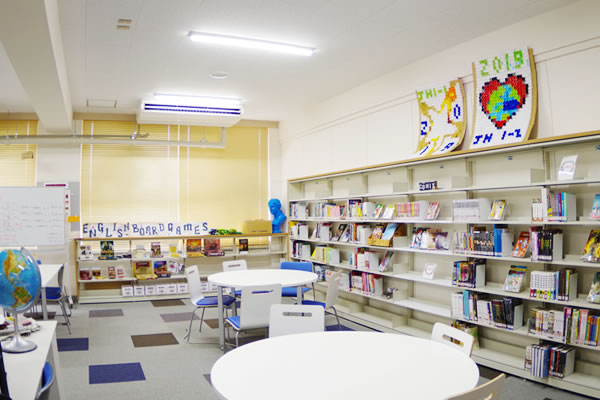

JH2137八百川綾太
大阪府立水都国際中学校&高等学校
住所：大阪市立住之江公園南港中３-７-１-３
電話番号:06-7662-9600(中学校)
電話番号:06-7662-9601(高校)
教育目標
社会に貢献する共創力をみがく
学校理念
01.ENGAGE
水都国際中学校・高等学校は、生徒や教員が新しいことに挑戦し続けられるようサポートします。自分自身を成長させ、生涯を通して学び続ける素地を養うために、失敗も成功も奨励します。
02.ENGAGE
生徒の興味関心を惹き、生徒自身が中心となって主体的に関わることができる、充実した創造的なプログラムを通して、水都国際中学校・高等学校の生徒は、学術的な専門性と国際社会で活躍できる資質・能力を獲得します。
03.EMPOWER
水都国際中学校・高等学校の生徒は、様々な事象を批判的に思考する方法、意思決定をする方法、チームで協働する方法を学びます。生徒と教員は世界に目を向け、グローバルな環境下で自信を持って行動します。
英語を手にすることを目標としてます。
そして生徒たちは日々勉強に励んでいます。
私達はあなたが来るのを楽しみにしています。
水都ではこのように先生と生徒たちがわちゃわちゃしています。人同士の距離が近いことも魅力の一つです。そして先生の一部はネイティブな先生です。生徒はそんな先生たちと英語で会話しています。また学校のデザインとして開放感があるのも魅力です。
本もたくさんあります。自分の知識の書物を深めましょう。
☆図書室とは、学校教育において不可欠な設備であり、法律によって設置が義務付けられている「学校図書館」のことです。具体的には、図書や視聴覚資料などを収集、整理、保存し、児童生徒や教職員が利用できるよう提供することで、学校教育の発展に貢献し、児童生徒の健全な教養を育成することを目的とします
 ここは新校舎の教室です。しかしこの教室には約40人が入っています。とてもぎゅうぎゅうです。普通、ここで授業を受けます。
ここは新校舎の教室です。しかしこの教室には約40人が入っています。とてもぎゅうぎゅうです。普通、ここで授業を受けます。
| メリット | デメリット |
| 英語が凄い | クラブがあまり活動しない |
| 自由でいい | 道を誤ると終わる |
本当のこと
みんなの口コミ集
山本せいごくんのリンク